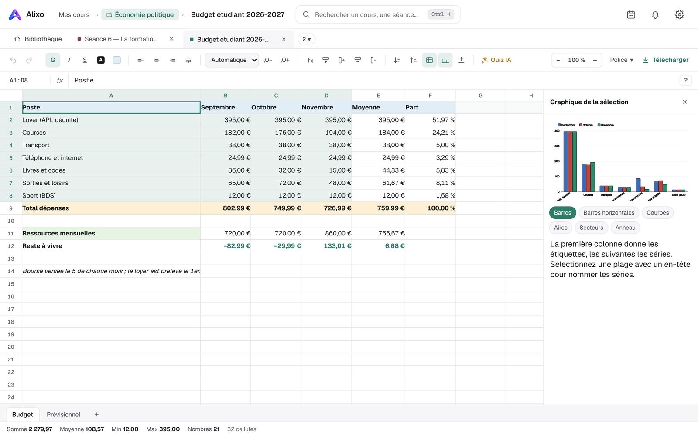
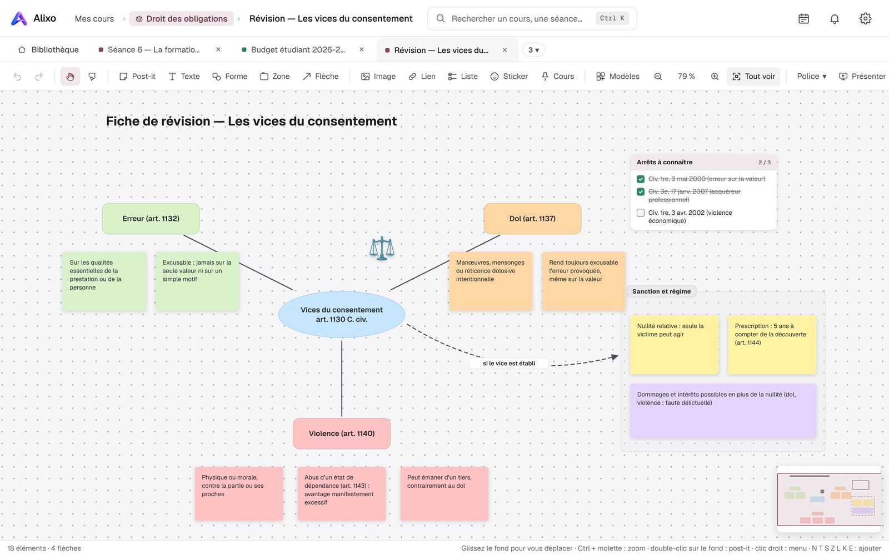
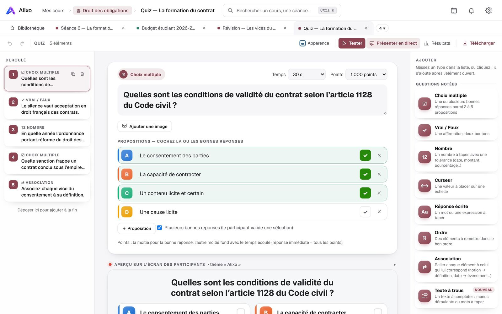
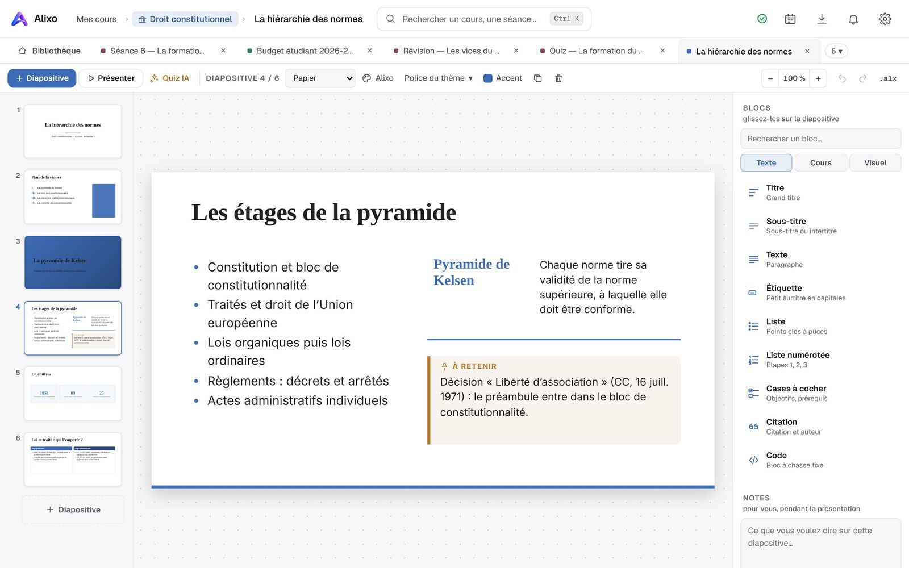

Structure automatique I. A. 1. a.
La numérotation juridique se gère toute seule. Le plan du cours se construit en direct dans le volet de gauche, avec ta progression.
L'application de prise de notes conçue pour l'amphi : cours, tableurs, planches, quiz et présentations. Tout au clavier, même hors ligne. Gratuit, Alixo+ en option.
ou ouvrir dans le navigateur (nouvel onglet)




Chaque bloc, chaque raccourci est pensé pour que tes mains restent sur le clavier et tes yeux sur le prof.
La numérotation juridique se gère toute seule. Le plan du cours se construit en direct dans le volet de gauche, avec ta progression.
Une notion, un arrêt, une formule, un PDF ? CtrlK fouille tous tes cours, planches, tableurs et fichiers en un instant.
Faits, procédure, problème, solution, portée : la trame est prête. Tape « art. 1240 C. civ. » et Alixo propose le lien Légifrance.
CtrlE et tu écris naturellement : fractions, racines, matrices, limites, sommes, lettres grecques. Rendu instantané.
Offre, demande, équilibre, taxe, prix plafond : des courbes que tu déplaces à la souris, directement dans la page.
Transforme ton cours en quiz, révise seul avec chrono et score, ou affiche un code : chacun répond depuis son téléphone, le classement bouge, les stats restent.
Orthographe et grammaire, gratuites pour tous : les corrections sont proposées sous le paragraphe. Tab accepte, Échap ignore.
PDF, Word, PowerPoint, Excel, images, audio : glissés dans un dossier, ouverts dans Alixo, synchronisés, partagés.
Tes cours dans un calendrier façon Apple. Pendant le cours, « + séance » ouvre la prise de notes du jour.
PDF propre avec sommaire, en-tête et date ; export Word fidèle ; fichiers .alx pour tout emporter.
Tes notes vivent sur ta machine. Elles se synchronisent avec ton compte dès que tu retrouves du réseau.
AlixoAI relit ton cours, corrige tes fautes et te prépare à l'examen, directement dans Alixo. Elle répond vite, et tes notes ne sont partagées avec personne : aucun texte n'est envoyé à Alixo ni à un service tiers.
Comprise dans Alixo+, sans quota, dans l'application PC (Windows et Mac). La correction pendant la frappe est gratuite pour tous, sur tous les appareils.
Le compte gratuit suffit pour prendre tes cours. Alixo+ suit ton compte sur PC, Mac, web et téléphone ; AlixoAI, elle, travaille dans l'application PC (Windows et Mac).
0 €sans limite de temps
14,99 €TTC par mois · ou 149,99 € TTC par an
Dégressif avec l'ancienneté, jusqu'à 9,99 € par mois après 24 mois. Annuel reconduit tacitement, résiliable à tout moment.
AlixoAI fonctionne dans l'application PC (Windows et Mac) et télécharge une seule fois, avec ton accord, un fichier de 1,1 à 2,5 Go ; sa rapidité dépend de l'ordinateur. Alixo+ : 14,99 € par mois ou 149,99 € par an (TTC), puis de moins en moins cher avec l'ancienneté, jusqu'à 9,99 € par mois ou 99,99 € par an : voir les tarifs. Abonnement mensuel sans engagement, ou annuel reconduit tacitement chaque année ; résiliable à tout moment en ligne dans Paramètres › Alixo+, avec effet à la fin de la période payée. Droit de rétractation de 14 jours, garantie légale de conformité et médiation : voir les conditions générales de vente.
Tu cliques, le fichier se télécharge. Ou tu ouvres Alixo dans ton navigateur.
Installation en une minute, mises à jour automatiques au démarrage.
Télécharger Alixo-Setup.exe Dernière version · 85 Mo Version portable, sans installationMême application, même compte : tes cours pris ailleurs sont déjà là.
Télécharger Alixo-Mac.dmg Dernière version Première ouverture sur MacRien à installer : la même application, idéale pour essayer ou pour la BU.
Ouvrir Alixo dans le navigateur (nouvel onglet) Rien à installer · avec ou sans compte Se connecterUn traitement de texte ne connaît ni ta filière, ni le rythme d'un amphi.
| Alixo | Word / Docs | Notion / OneNote | |
|---|---|---|---|
| Numérotation I. A. 1. a. automatique | Manuel | ||
| Fiches d'arrêt et fiches cliniques guidées | |||
| Graphiques éco manipulables | |||
| Formules tapées en langage naturel | Éditeur d'équations | LaTeX | |
| Quiz en direct depuis le cours | |||
| Recherche dans tous les cours et fichiers | Fichier par fichier | ||
| Travail à plusieurs en direct | |||
| Hors ligne complet | Selon l'abonnement | Partiel | |
| Prix | Gratuit · Alixo+ en option | Abonnement | Freemium |
Une autre question ? Écris-nous ou parcours la documentation.
Oui, l'essentiel l'est, sans limite de temps et sans carte : cours, quiz, planches, présentations, tableurs, dossiers, fichiers jusqu'à 3 Go, agenda, partage, dictionnaire, export PDF, synchronisation. Alixo+, en option, ajoute l'intelligence artificielle, les tâches, tous les thèmes et toutes les polices, et lève la limite de stockage.
Oui, uniquement le passage que tu lui soumets, au moment où tu demandes une correction, un quiz ou une fiche. Aucun texte n'est envoyé à Alixo ni à un service tiers, et tu peux désactiver AlixoAI dans Paramètres › IA. En savoir plus
Oui. La version web (nouvel onglet) est la même application, dans ton navigateur, toujours au niveau de la version PC. Sur téléphone, la version mobile s'ouvre automatiquement. Avec un compte, tes cours sont partagés entre le web, le mobile et l'application PC.
Oui : une application universelle (Apple Silicon et Intel), avec le même compte et les mêmes cours que sur Windows et sur le web. Télécharge Alixo-Mac.dmg, glisse Alixo dans Applications, puis au premier lancement autorise l'ouverture une fois dans Réglages Système › Confidentialité et sécurité › « Ouvrir quand même » (autorisation demandée une seule fois). Les nouvelles versions sont signalées dans l'application.
Clique sur « Télécharger » : Alixo-Setup.exe arrive dans tes téléchargements. Double-clique, suis l'installation, c'est tout. Si Windows SmartScreen affiche un avertissement (fréquent pour les applications récentes), clique sur « Informations complémentaires » puis « Exécuter quand même ». Une version portable, sans installation, est aussi disponible.
Tes cours restent les tiens. L'application travaille hors ligne sur ta machine, se synchronise avec ton compte, et tu peux exporter tes cours en PDF, Word ou .alx à tout moment.
L'essentiel est gratuit, sans limite de temps. Compte gratuit sans engagement, tes notes t'appartiennent.